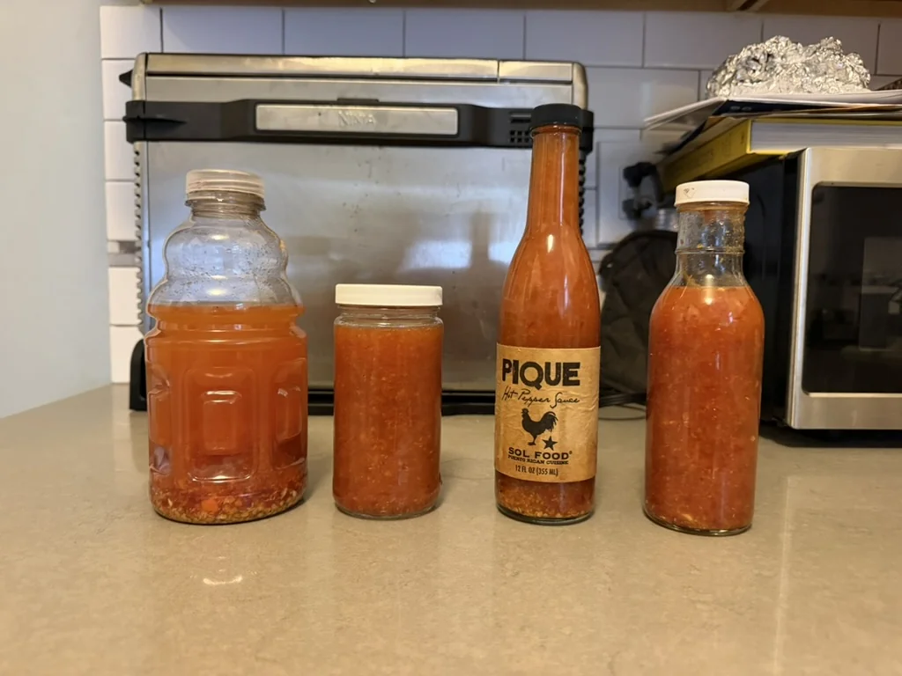

SOL FOOD–INSPIRED PIQUE SAUCE
Ship sauce.
Keep notes.
For meat, rice, and beans. A very good hot sauce deserves better documentation than “I think I put something orange in it.”
The recipe: Husbands That Cook ↗, adapted from Scot Lang. Inspired by Sol Food; not the restaurant’s official recipe.

PRODUCTION ENVIRONMENTOne batch. A reasonable amount of ambition.
Four steps. Zero stand-ups.
The fridge is part of the recipe. Keep the soak and finished sauce refrigerated. This is not a shelf-stable canning formula. For that, use a tested canning recipe.
Write it down while you still remember.
Pepper swaps, soak time, salt changes, verdict. Your future self was not in the room.
Jake started with this recipe and began changing chiles and vinegar-soak times. This is a place to keep the useful part: what went in, what changed, and whether you’d make it again.
Jake’s kitchen note ↗PROCUREMENT DEPARTMENT
It’s a grocery list.
We almost made you submit a purchase order.
Your ingredients
1× batchVERSION CONTROL FOR VINEGAR
Remember the good one.
Actual batches, actual tasting notes. No fictional Scoville readings.